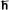

In 1927, Werner Heisenberg determined that it is impossible to measure both a particle's position and its momentum exactly. The more precisely we determine one, the less we know about the other. This is called the Heisenberg Uncertainty Principle, and it is a fundamental property of quantum mechanics.
The precise relation is:
This constant is Planck's constant divided by two; Planck's constant is represented by the symbol , or "h-bar," and equals 1.05 x 10-34 joule-seconds, or 6.58 x 10-22 MeV-seconds.
The act of measuring a particle's position will affect your knowledge of its momentum, and vice-versa.
We can also express this principle in terms of energy and time:
This means that if a particle exists for a very brief time, you cannot precisely determine its energy. A short-lived particle could have a tremendously uncertain energy, which leads to the idea of virtual particles.